<title>Первый экран приложения</title>
<meta name="claude:viewport-fit-sides" content="cover">
<style>
  /* Рабочий лист сравнения: «сейчас / предлагаю» парами, правило первого экрана таблицей, живая анимация. Цвета — тема «Стандартная» приложения. */
  :root {
    --bg: #f7f4ee; --card: #ffffff; --card2: #fbf9f5; --ink: #172330; --muted: #626e7b; --line: rgba(28,43,57,.14);
    --gold: #c49a5f; --gold-text: #8a6a35; --new: #52705f; --soft: rgba(196,154,95,.10);
    --shadow-1: 0 4px 16px rgba(23,35,48,.06); --shadow-2: 0 12px 28px rgba(23,35,48,.08);
    --f-body: "IBM Plex Sans", system-ui, -apple-system, "Segoe UI", sans-serif;
    --f-num: "IBM Plex Mono", ui-monospace, Menlo, monospace;
  }
  @media (prefers-color-scheme: dark) { :root:not([data-theme="light"]) {
    --bg: #101923; --card: #172330; --card2: #1c2b39; --ink: #f7f4ee; --muted: #a8b2bd; --line: rgba(255,255,255,.12);
    --gold-text: #d8bd91; --new: #86a593; --soft: rgba(196,154,95,.13);
    --shadow-1: 0 4px 16px rgba(0,0,0,.28); --shadow-2: 0 12px 28px rgba(0,0,0,.28); color-scheme: dark } }
  :root[data-theme="dark"] {
    --bg: #101923; --card: #172330; --card2: #1c2b39; --ink: #f7f4ee; --muted: #a8b2bd; --line: rgba(255,255,255,.12);
    --gold-text: #d8bd91; --new: #86a593; --soft: rgba(196,154,95,.13);
    --shadow-1: 0 4px 16px rgba(0,0,0,.28); --shadow-2: 0 12px 28px rgba(0,0,0,.28); color-scheme: dark }
  * { box-sizing: border-box; }
  body { background: var(--bg); color: var(--ink); font: 15px/1.55 var(--f-body); }
  main { max-width: 1440px; margin: 0 auto; padding-block: 24px 64px;
    padding-left: max(16px, env(safe-area-inset-left, 0px)); padding-right: max(16px, env(safe-area-inset-right, 0px));
    display: flex; flex-direction: column; gap: 14px; }
  h1 { font-size: 26px; margin: 0; text-wrap: balance; }
  h2 { font-size: 19px; margin: 26px 0 0; text-wrap: balance; display: flex; gap: 10px; align-items: baseline; }
  h2 .n { font: 600 13px var(--f-num); color: var(--gold-text); }
  h3 { font-size: 12px; margin: 8px 0 0; color: var(--muted); text-transform: uppercase; letter-spacing: .06em; }
  p { margin: 0; max-width: 75ch; } .muted { color: var(--muted); }
  .lead { background: var(--card); border: 1px solid var(--line); border-radius: 14px; padding: 14px 16px; display: flex; flex-direction: column; gap: 8px; }
  .lead ul { margin: 0; padding-left: 20px; display: flex; flex-direction: column; gap: 4px; }
  .pair { display: grid; grid-template-columns: repeat(2, minmax(0, 1fr)); gap: 14px; align-items: start; }
  .row { display: grid; grid-template-columns: repeat(auto-fill, minmax(min(100%, 260px), 1fr)); gap: 14px; align-items: start; }
  .row.wide { grid-template-columns: repeat(auto-fill, minmax(min(100%, 420px), 1fr)); }
  figure { margin: 0; background: var(--card); border: 1px solid var(--line); border-radius: 14px; padding: 10px; display: flex; flex-direction: column; gap: 8px; min-width: 0; }
  figcaption { font-weight: 700; font-size: 12px; text-transform: uppercase; letter-spacing: .06em; }
  figcaption.now { color: var(--muted); } figcaption.new { color: var(--new); }
  figcaption span { text-transform: none; letter-spacing: 0; font-weight: 400; color: var(--muted); }
  figure img { width: 100%; height: auto; display: block; border-radius: 8px; border: 1px solid var(--line); }
  .table-wrap { overflow-x: auto; background: var(--card); border: 1px solid var(--line); border-radius: 14px; }
  table { width: 100%; border-collapse: collapse; font-size: 14px; min-width: 640px; }
  th, td { text-align: left; padding: 9px 12px; border-bottom: 1px solid var(--line); vertical-align: top; }
  tr:last-child td { border-bottom: 0; }
  th { font-size: 11.5px; text-transform: uppercase; color: var(--muted); letter-spacing: .06em; }
  td.n { width: 40px; font: 600 13px var(--f-num); color: var(--muted); }
  .tag { display: inline-block; font-size: 11.5px; font-weight: 600; border-radius: 999px; padding: 1px 8px; border: 1px solid var(--line); white-space: nowrap; }
  .tag.chg { color: var(--gold-text); } .tag.add { color: var(--new); }
  .ask { border-left: 3px solid var(--gold); padding: 10px 14px; background: var(--soft); border-radius: 0 10px 10px 0; display: flex; flex-direction: column; gap: 6px; }
  .ask ol { margin: 0; padding-left: 20px; display: flex; flex-direction: column; gap: 4px; }

  /* Живой показ анимации — те же правила, что в макете (welcome-mock.js), уменьшенная копия экрана */
  .demo { background: var(--bg); border: 1px solid var(--line); border-radius: 14px; overflow: hidden; }
  .demo-bar { display: flex; justify-content: space-between; align-items: center; gap: 10px; padding: 10px 14px; border-bottom: 1px solid var(--line); background: var(--card); flex-wrap: wrap; }
  .demo-bar b { font-size: 13px; }
  .btn { font: 600 14px var(--f-body); color: var(--ink); background: var(--card2); border: 1px solid var(--line); border-radius: 10px; padding: 8px 14px; min-height: 40px; cursor: pointer; }
  .btn:hover { border-color: var(--gold); } .btn:focus-visible, .p2w-tile:focus-visible { outline: 2px solid var(--gold); outline-offset: 2px; }
  .p2w { width: 100%; max-width: 880px; margin: 0 auto; padding: 40px 24px 40px; }
  .p2w-eyebrow { font-size: 12px; font-weight: 700; letter-spacing: .08em; text-transform: uppercase; color: var(--gold-text); display: flex; align-items: center; gap: 10px; }
  .p2w-eyebrow::before { content: ''; width: 28px; height: 2px; border-radius: 2px; background: var(--gold); transform-origin: left; }
  .p2w-h { font-size: clamp(24px, 4vw, 34px); line-height: 1.15; font-weight: 700; margin: 12px 0 8px; letter-spacing: -.01em; text-wrap: balance; }
  .p2w-p { font-size: 15px; line-height: 1.5; color: var(--muted); margin: 0 0 24px; max-width: 60ch; }
  .p2w-grid { display: grid; gap: 12px; grid-template-columns: repeat(auto-fill, minmax(min(100%, 300px), 1fr)); }
  .p2w-tile { display: flex; align-items: center; gap: 14px; text-align: left; width: 100%; min-height: 88px; padding: 16px 18px; border-radius: 16px;
    border: 1px solid var(--line); background: var(--card); box-shadow: var(--shadow-1); color: inherit; cursor: pointer; font: inherit; transition: border-color .15s, transform .15s, box-shadow .15s; }
  .p2w-tile:hover { border-color: var(--gold); transform: translateY(-1px); box-shadow: var(--shadow-2); }
  .p2w-ico { flex: none; width: 48px; height: 48px; border-radius: 12px; display: grid; place-items: center; background: var(--soft); color: var(--gold-text); }
  .p2w-ico svg { width: 24px; height: 24px; }
  .p2w-txt { flex: 1; min-width: 0; display: flex; flex-direction: column; gap: 3px; }
  .p2w-t { font-size: 16px; font-weight: 700; } .p2w-d { font-size: 14px; line-height: 1.4; color: var(--muted); }
  .p2w-go { flex: none; color: var(--muted); }
  .p2w-foot { margin-top: 24px; padding-top: 16px; border-top: 1px solid var(--line); display: flex; flex-wrap: wrap; gap: 4px 24px; }
  .p2w-link { display: inline-flex; align-items: center; gap: 8px; min-height: 44px; font-size: 15px; font-weight: 600; color: var(--gold-text); }
  .p2w-link svg { width: 18px; height: 18px; }
  .p2w-anim .p2w-eyebrow, .p2w-anim .p2w-h, .p2w-anim .p2w-p, .p2w-anim .p2w-tile, .p2w-anim .p2w-foot { opacity: 0; animation: p2w-in .5s cubic-bezier(.2,.7,.2,1) forwards; }
  .p2w-anim .p2w-eyebrow::before { transform: scaleX(0); animation: p2w-line .5s .1s ease-out forwards; }
  .p2w-anim .p2w-h { animation-delay: .08s; } .p2w-anim .p2w-p { animation-delay: .18s; }
  .p2w-anim .p2w-tile:nth-child(1) { animation-delay: .28s; } .p2w-anim .p2w-tile:nth-child(2) { animation-delay: .37s; }
  .p2w-anim .p2w-tile:nth-child(3) { animation-delay: .46s; } .p2w-anim .p2w-tile:nth-child(4) { animation-delay: .55s; }
  .p2w-anim .p2w-foot { animation-delay: .75s; }
  @keyframes p2w-in { from { opacity: 0; transform: translateY(10px); } to { opacity: 1; transform: none; } }
  @keyframes p2w-line { to { transform: scaleX(1); } }
  @media (prefers-reduced-motion: reduce) { .p2w-anim * { animation: none !important; opacity: 1 !important; transform: none !important; } }
  @media (max-width: 767px) { .pair { grid-template-columns: 1fr; } h1 { font-size: 21px; } .p2w { padding: 24px 16px; } }
</style>
<link rel="stylesheet" href="https://fonts.googleapis.com/css2?family=IBM+Plex+Mono:wght@500;600&family=IBM+Plex+Sans:wght@400;600;700&display=swap">

<main>
  <h1>Первый экран приложения — сейчас и как предлагаю</h1>
  <p class="muted">P2-0074, этап 1 (показ до кода) · 30.10.2026 · стенд с подставными данными: компания «Тест-Строй», сотрудник Иванов Иван. Предложение нарисовано прямо в приложении: та же шапка, то же левое меню, те же цвета. Код ещё не писался.</p>

  <div class="lead">
    <b>Коротко</b>
    <ul>
      <li>Сейчас у приложения два правила первого экрана: при открытии без адреса — Осмотр, после входа почтой — последний раздел, а если его нет — План/Факт. Поэтому кто-то видит Осмотр, а кто-то План/Факт.</li>
      <li>Предлагаю одно правило. Первый вход на устройстве — приветствие с плитками только тех разделов, которые человеку доступны, с короткой анимацией (около 1 секунды).</li>
      <li>Дальше приложение открывает последний раздел, где человек был. Если такого нет, открывает раздел по его работе. Руководителю показывает приветствие без анимации.</li>
      <li>Ссылка на конкретный экран открывается как есть, приветствие её не перехватывает.</li>
    </ul>
  </div>

  <h2><span class="n">1</span>Куда ведёт приложение при открытии</h2>
  <div class="table-wrap"><table>
    <thead><tr><th>№</th><th>Случай</th><th>Сейчас</th><th>Предлагаю</th></tr></thead>
    <tbody>
      <tr><td class="n">1</td><td>Первый вход этой учётки на этом устройстве</td><td>Осмотр или План/Факт (зависит от того, как открыли)</td><td><span class="tag add">новое</span> Приветствие с анимацией</td></tr>
      <tr><td class="n">2</td><td>Повторный вход, последний раздел доступен</td><td>Последний раздел</td><td>Последний раздел (без изменений)</td></tr>
      <tr><td class="n">3</td><td>Последний раздел отняли (права изменились)</td><td>План/Факт, без него — Настройки</td><td><span class="tag chg">по-другому</span> Раздел по работе человека (строки 4–7)</td></tr>
      <tr><td class="n">4</td><td>Нет последнего раздела, человек проводит проверки Качества</td><td>Осмотр или План/Факт</td><td>Качество → Осмотр</td></tr>
      <tr><td class="n">5</td><td>…работает только в Стройконтроле</td><td>Осмотр или План/Факт</td><td>Стройконтроль</td></tr>
      <tr><td class="n">6</td><td>…работает только в План/Факте (ПТО)</td><td>План/Факт</td><td>План/Факт</td></tr>
      <tr><td class="n">7</td><td>…руководитель, администратор, несколько разделов поровну</td><td>Осмотр или План/Факт</td><td><span class="tag chg">по-другому</span> Приветствие с плитками, без анимации</td></tr>
      <tr><td class="n">8</td><td>У человека нет ни одного раздела</td><td>Настройки</td><td>Настройки (без изменений)</td></tr>
      <tr><td class="n">9</td><td>Открыли ссылку на экран</td><td>Этот экран</td><td>Этот экран (без изменений)</td></tr>
    </tbody>
  </table></div>
  <p class="muted">Работу человека приложение узнаёт по его правам (что ему разрешено делать), а не по названию должности: названия в компаниях разные. Отметка «приветствие уже было» хранится на устройстве. На новом телефоне человек увидит приветствие ещё раз.</p>

  <h2><span class="n">2</span>Телефон 375 — светлая тема</h2>
  <div class="row">
    <figure><figcaption class="now">Сейчас <span>· новый телефон: Осмотр</span></figcaption>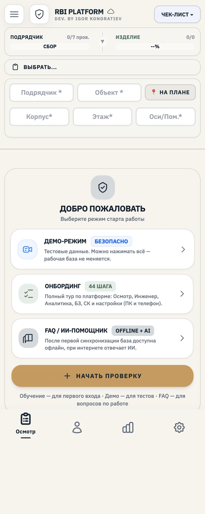</figure>
    <figure><figcaption class="now">Сейчас <span>· после входа: План/Факт</span></figcaption>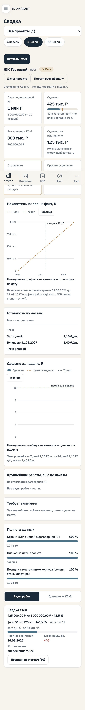</figure>
    <figure><figcaption class="new">Предлагаю <span>· приветствие, все разделы</span></figcaption>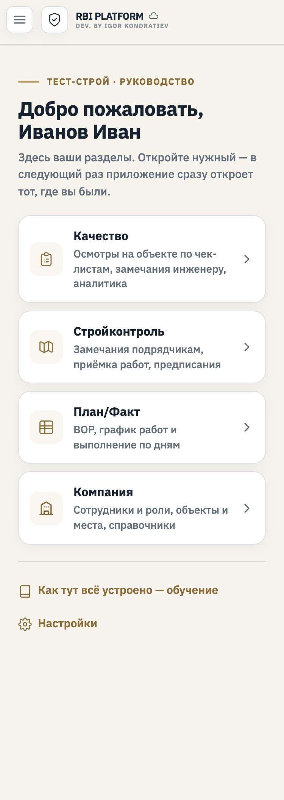</figure>
  </div>

  <h2><span class="n">3</span>Телефон 375 — тёмная тема</h2>
  <div class="row">
    <figure><figcaption class="now">Сейчас <span>· Осмотр</span></figcaption>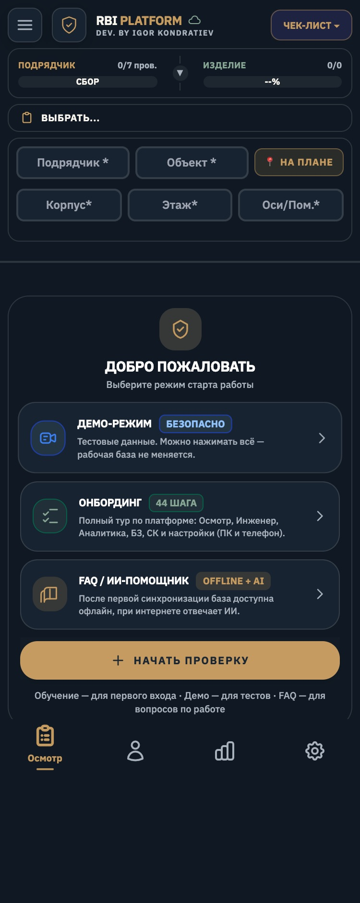</figure>
    <figure><figcaption class="now">Сейчас <span>· План/Факт</span></figcaption>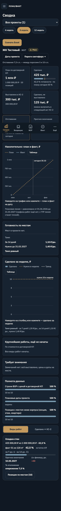</figure>
    <figure><figcaption class="new">Предлагаю</figcaption>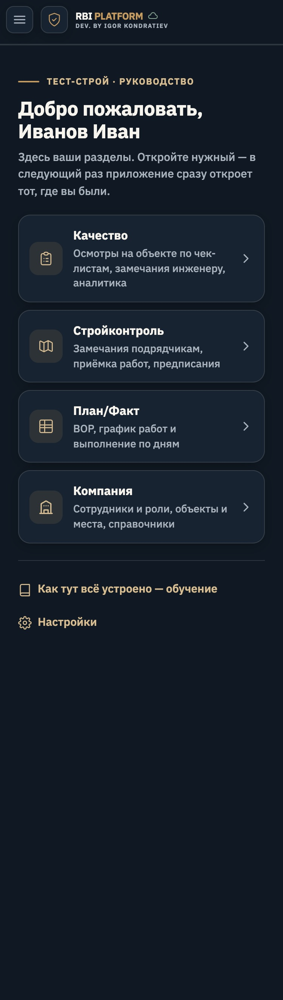</figure>
  </div>

  <h2><span class="n">4</span>Компьютер 1440 — светлая тема</h2>
  <div class="pair">
    <figure><figcaption class="now">Сейчас <span>· Осмотр</span></figcaption>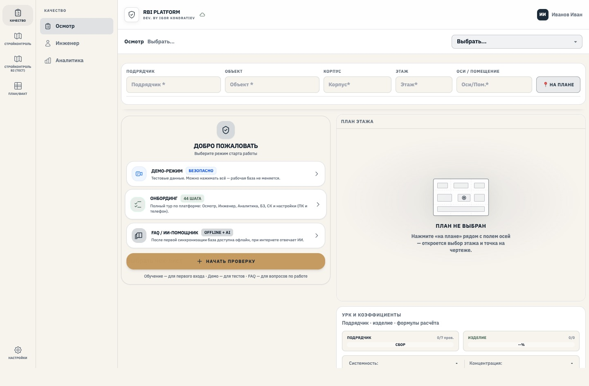</figure>
    <figure><figcaption class="now">Сейчас <span>· План/Факт</span></figcaption>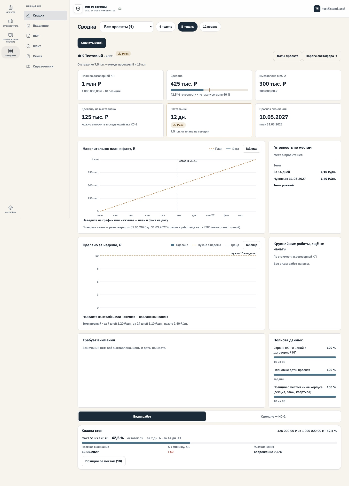</figure>
  </div>
  <figure><figcaption class="new">Предлагаю <span>· левое меню остаётся, выбранного раздела нет</span></figcaption>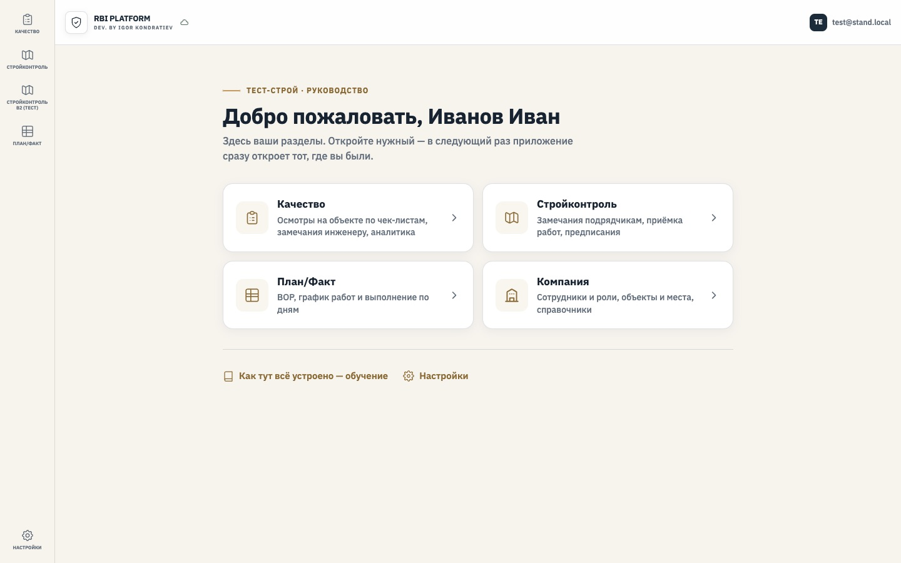</figure>

  <h2><span class="n">5</span>Компьютер 1440 — тёмная тема</h2>
  <div class="pair">
    <figure><figcaption class="now">Сейчас <span>· Осмотр</span></figcaption>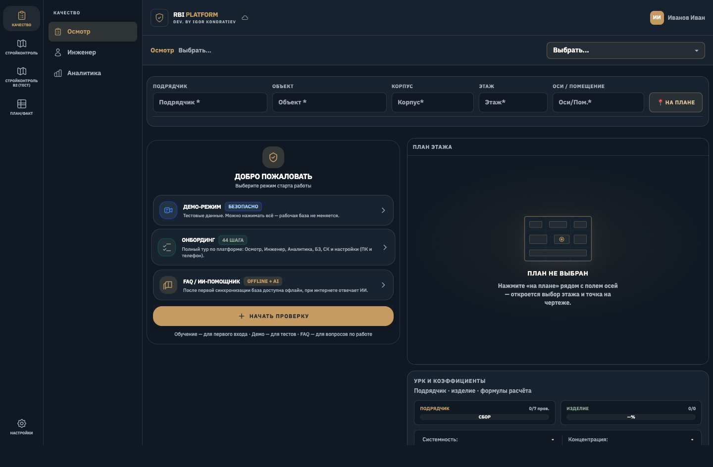</figure>
    <figure><figcaption class="new">Предлагаю</figcaption>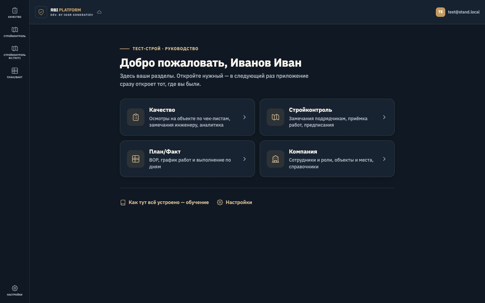</figure>
  </div>

  <h2><span class="n">6</span>Плитки зависят от доступа</h2>
  <p>Три примера. В плитках и в левом меню — только то, что человеку доступно в его компании. Подпись над именем — компания и роль.</p>
  <h3>Телефон</h3>
  <div class="row">
    <figure><figcaption class="new">Только Качество <span>· инженер качества</span></figcaption>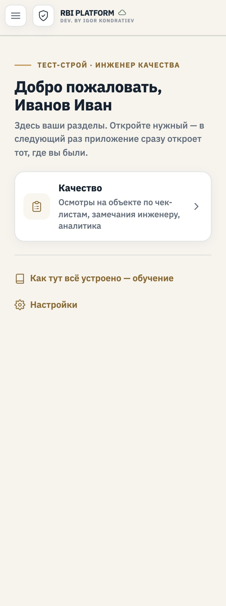</figure>
    <figure><figcaption class="new">Качество и Стройконтроль</figcaption>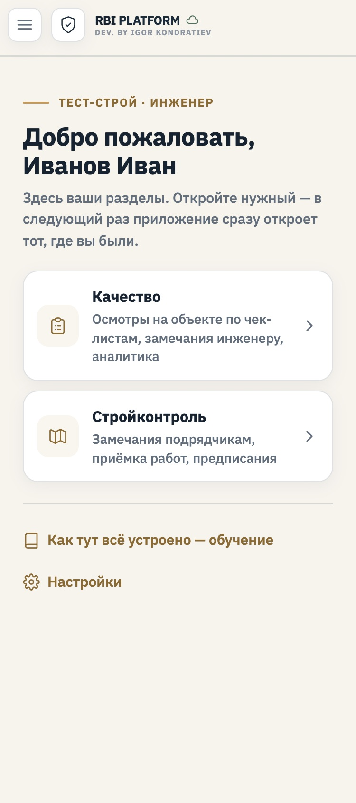</figure>
    <figure><figcaption class="new">Все разделы и «Компания» <span>· руководство</span></figcaption></figure>
  </div>
  <h3>Компьютер</h3>
  <div class="row wide">
    <figure><figcaption class="new">Только Качество</figcaption>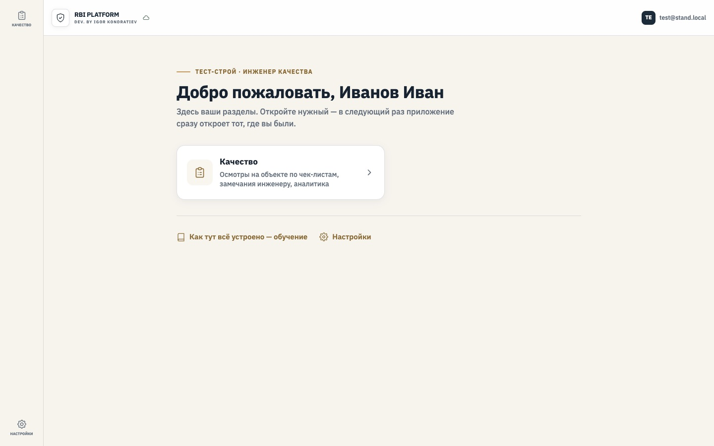</figure>
    <figure><figcaption class="new">Качество и Стройконтроль</figcaption>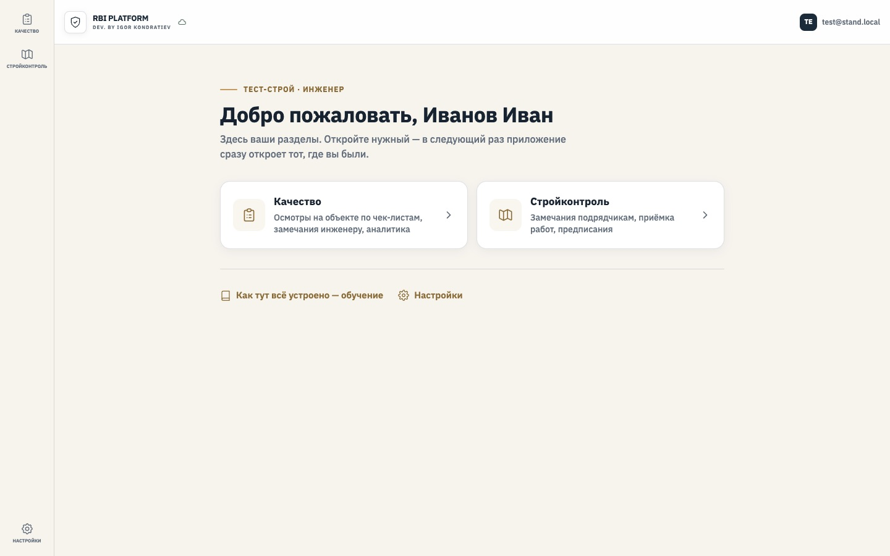</figure>
    <figure><figcaption class="new">Все разделы и «Компания»</figcaption></figure>
  </div>

  <h2><span class="n">7</span>Анимация при первом входе</h2>
  <p>Строки появляются снизу вверх, плитки — по очереди, всё вместе около 1 секунды. Без библиотек. Если на телефоне включено «Уменьшить движение», анимации нет. При повторных показах тоже нет.</p>
  <div class="row">
    <figure><figcaption class="new">0,15 с</figcaption>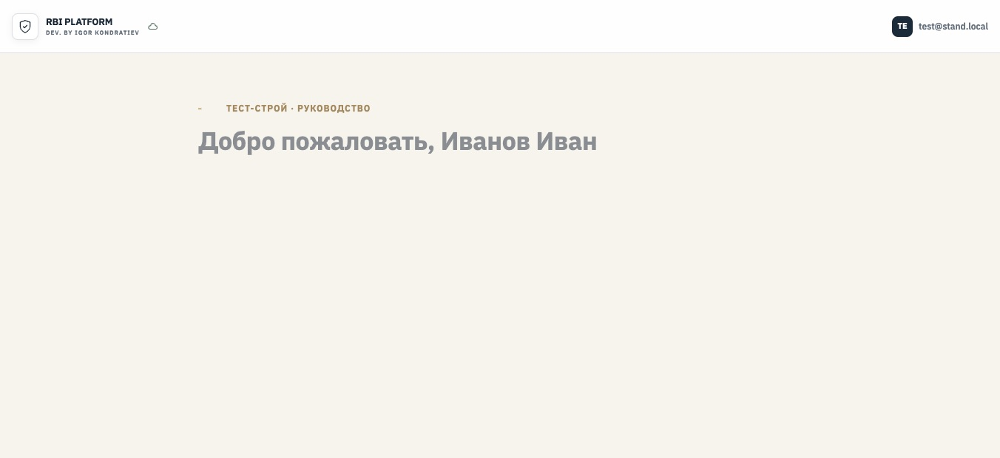</figure>
    <figure><figcaption class="new">0,4 с</figcaption>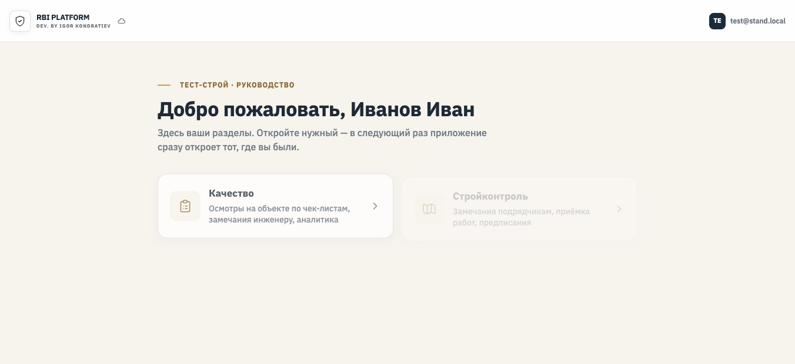</figure>
    <figure><figcaption class="new">0,7 с</figcaption>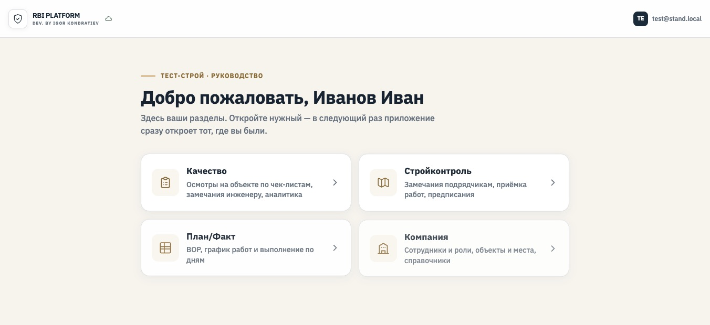</figure>
    <figure><figcaption class="new">1,2 с</figcaption>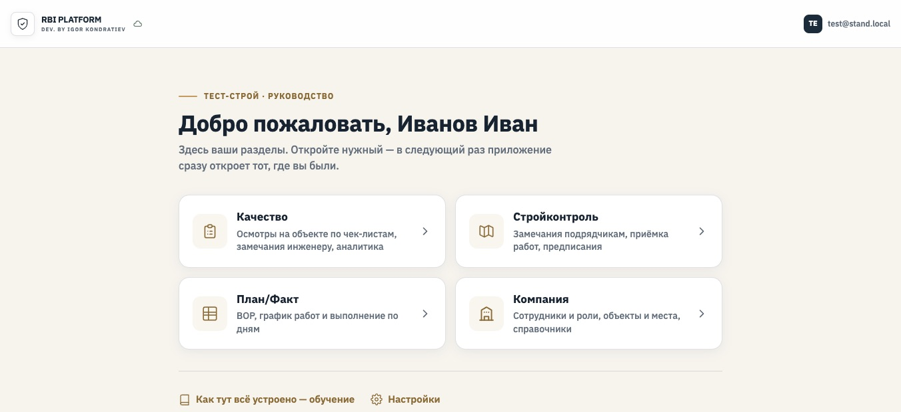</figure>
  </div>
  <div class="demo">
    <div class="demo-bar"><b>Живой показ (уменьшенная копия экрана)</b><button class="btn" id="replay" type="button">Показать анимацию ещё раз</button></div>
    <section class="p2w p2w-anim" id="p2w-demo">
      <div class="p2w-eyebrow">Тест-Строй · Руководство</div>
      <h2 class="p2w-h" style="margin-top:12px">Добро пожаловать, Иванов Иван</h2>
      <p class="p2w-p">Здесь ваши разделы. Откройте нужный — в следующий раз приложение сразу откроет тот, где вы были.</p>
      <div class="p2w-grid">
        <button class="p2w-tile" type="button"><span class="p2w-ico"><svg viewBox="0 0 24 24" fill="none" stroke="currentColor" stroke-width="1.8" stroke-linecap="round" stroke-linejoin="round"><rect x="5" y="4" width="14" height="17" rx="2"/><path d="M9 4V3h6v1M9 10h6M9 14h6M9 18h4"/></svg></span><span class="p2w-txt"><span class="p2w-t">Качество</span><span class="p2w-d">Осмотры на объекте по чек-листам, замечания инженеру, аналитика</span></span><span class="p2w-go">›</span></button>
        <button class="p2w-tile" type="button"><span class="p2w-ico"><svg viewBox="0 0 24 24" fill="none" stroke="currentColor" stroke-width="1.8" stroke-linecap="round" stroke-linejoin="round"><path d="M3 6l6-2 6 2 6-2v14l-6 2-6-2-6 2z"/><path d="M9 4v14M15 6v14"/></svg></span><span class="p2w-txt"><span class="p2w-t">Стройконтроль</span><span class="p2w-d">Замечания подрядчикам, приёмка работ, предписания</span></span><span class="p2w-go">›</span></button>
        <button class="p2w-tile" type="button"><span class="p2w-ico"><svg viewBox="0 0 24 24" fill="none" stroke="currentColor" stroke-width="1.8" stroke-linecap="round" stroke-linejoin="round"><rect x="3" y="4" width="18" height="16" rx="2"/><path d="M3 10h18M3 15h18M9 4v16"/></svg></span><span class="p2w-txt"><span class="p2w-t">План/Факт</span><span class="p2w-d">ВОР, график работ и выполнение по дням</span></span><span class="p2w-go">›</span></button>
        <button class="p2w-tile" type="button"><span class="p2w-ico"><svg viewBox="0 0 24 24" fill="none" stroke="currentColor" stroke-width="1.8" stroke-linecap="round" stroke-linejoin="round"><path d="M3 21h18"/><path d="M5 21V7l7-4 7 4v14"/><path d="M9 21v-5h6v5"/></svg></span><span class="p2w-txt"><span class="p2w-t">Компания</span><span class="p2w-d">Сотрудники и роли, объекты и места, справочники</span></span><span class="p2w-go">›</span></button>
      </div>
      <div class="p2w-foot"><span class="p2w-link">Как тут всё устроено — обучение</span><span class="p2w-link">Настройки</span></div>
    </section>
  </div>

  <h2><span class="n">8</span>Что нужно от вас</h2>
  <div class="ask">
    <p>Ответьте «так» или напишите правки. Особенно посмотрите:</p>
    <ol>
      <li>Тексты в плитках — одна строка «что тут делают». Их можно поменять.</li>
      <li>Обращение по имени: «Добро пожаловать, Иванов Иван» — как записано в профиле, фамилия первой.</li>
      <li>Подпись над приветствием — компания и роль. Её можно убрать.</li>
    </ol>
  </div>
</main>

<script>
  document.getElementById('replay').addEventListener('click', function () {
    var s = document.getElementById('p2w-demo');
    s.classList.remove('p2w-anim'); void s.offsetWidth; s.classList.add('p2w-anim');
  });
</script>
